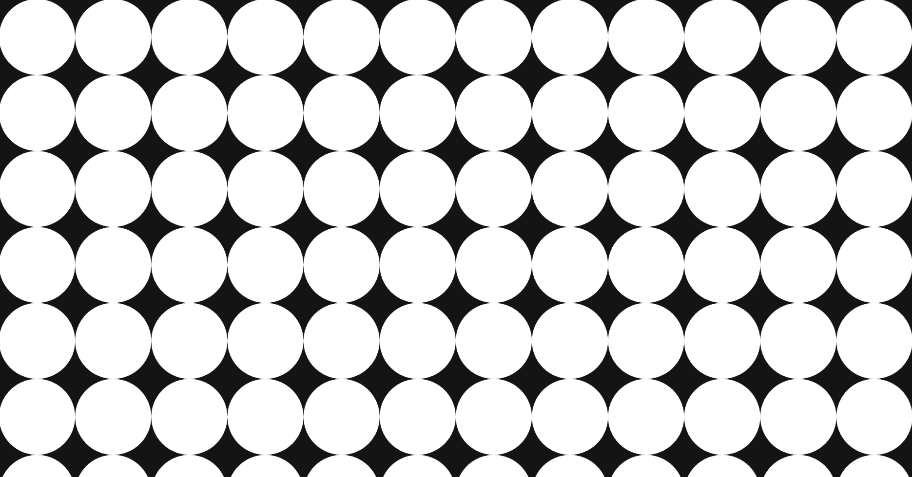
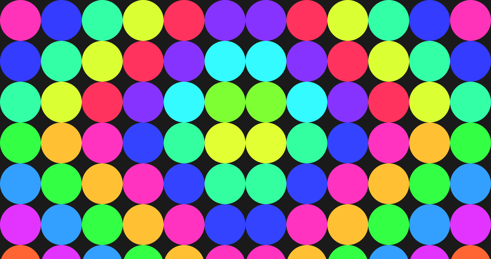
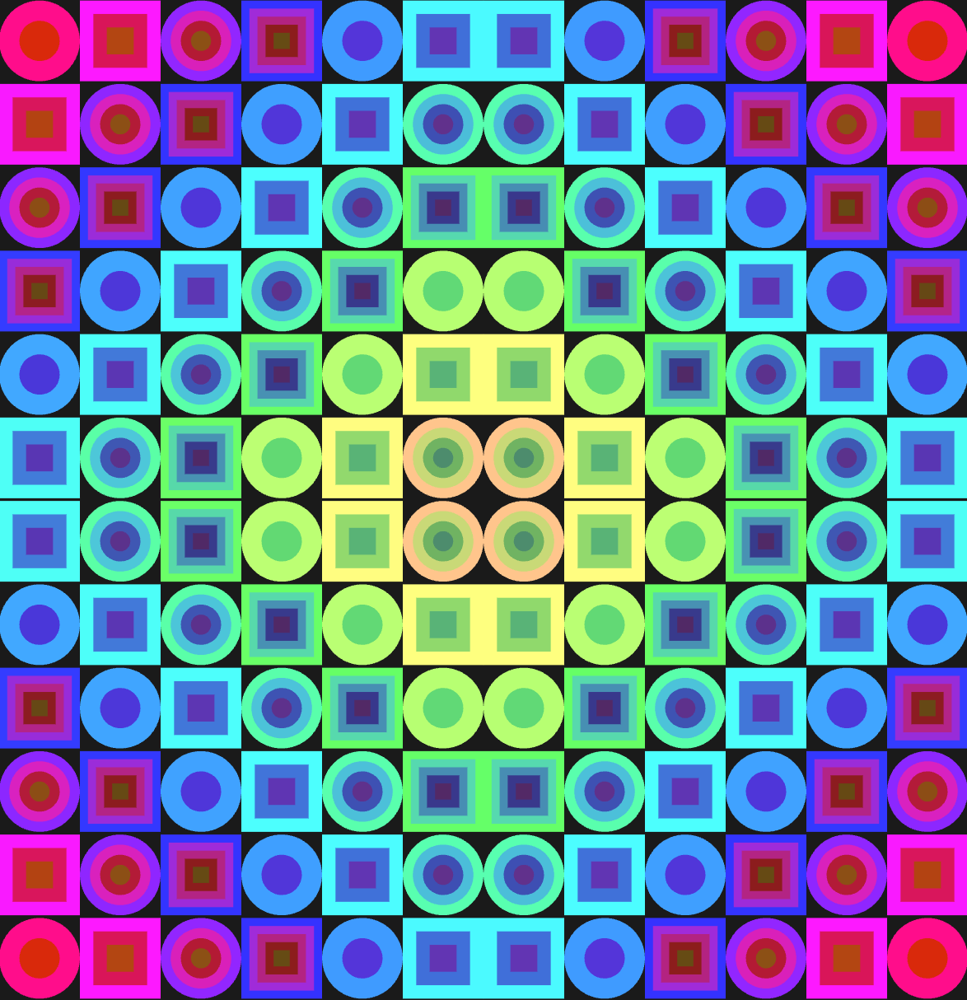

Mirrored Circle Pattern: p5.js Documentation
This sketch fills the whole window with a grid of nested circles and squares that vary in hue, saturation, ring count, and shape. It uses HSB color mode, loops to repeat the pattern, and symmetry so the left side mirrors the right and the top mirrors the bottom.
Problems and solutions
- The first version was too complicated for a beginner assignment. It used animation, rotation, and
push()/pop()withscale()flips. I removed all of it and kept only loops, HSB, and one simple symmetry rule. - Making the pattern symmetric. Using plain x and y positions gave a different color on each side of the window. I fixed this by measuring distance from the center with
abs()instead of using the raw position. - The mirror line landed on a tile. With an odd number of columns, the middle column sat on the center line, so the pattern looked lopsided. I set the number of columns to an even number (12) so the center falls between two tiles.
- The grid did not fill the window. A fixed number of rows left gaps on tall or short windows. I calculated the tile width from the column count and chose the number of rows from the window height.
- The top and bottom did not mirror exactly. My first version used
ceil(height / size)for the rows, so the grid ran past the bottom edge and its center was no longer the window's center. I fixed it by rounding the rows to an even number and setting the tile height toheight / rows, so the tiles fit the window exactly. - Resizing the window broke the layout. Because the sketch draws only once, it did not update on resize.
windowResized()now resizes the canvas and callsredraw(). - There was too little variation. Only the hue changed from tile to tile, so the pattern looked uniform. I added saturation that grows toward the edges, a different ring count per tile, and tiles that alternate between circles and squares.
- The hue could go past 360. Hue values above 360 are outside the HSB range I set. I used
% 360to wrap the value back around.
The most interesting problem: symmetry
The hardest part was making one side of the window match the other. My first idea was to draw the left half and then flip it for the right half. That works, but it needs scale(-1, 1), push(), and pop(), which made the code hard to read. The real question was simpler: what do two mirrored circles have in common? The answer is that they are the same distance from the center, just on opposite sides of it.
The solution was abs(). Subtracting the center, x - width / 2, gives a negative number on the left and a positive number on the right. abs() removes the sign, so a circle 300 pixels left of center and one 300 pixels right of center both give 300. I use that distance to pick the hue, so mirrored circles get the same color automatically. The same trick on the y axis mirrors the top and bottom. I also had to use an even number of columns and rows, otherwise one column or row sits exactly on the center line and has no mirror partner.
Three stages of building
Stage 1: a grid with loops
The goal here was only to get the tiling right. Every circle is white, and two loops (rows and columns) place them across the window.

function setup() {
createCanvas(windowWidth, windowHeight);
noStroke();
noLoop();
}
function draw() {
background(20);
let cols = 12;
let size = width / cols;
let rows = ceil(height / size);
for (let row = 0; row < rows; row++) {
for (let col = 0; col < cols; col++) {
fill(255);
circle(col * size + size / 2, row * size + size / 2, size);
}
}
}Stage 2: HSB color and symmetry
Now the circles get color. colorMode(HSB) lets one number, the hue, control the color. The hue comes from the distance to the center, which creates the symmetry left to right. Top to bottom it is only approximate here, and Stage 3 fixes that.

function setup() {
createCanvas(windowWidth, windowHeight);
colorMode(HSB, 360, 100, 100);
noStroke();
noLoop();
}
function draw() {
background(0, 0, 10);
let cols = 12;
let size = width / cols;
let rows = ceil(height / size);
for (let row = 0; row < rows; row++) {
for (let col = 0; col < cols; col++) {
let x = col * size + size / 2;
let y = row * size + size / 2;
let dx = abs(x - width / 2);
let dy = abs(y - height / 2);
let hue = (dx * 0.3 + dy * 0.3) % 360;
fill(hue, 80, 100);
circle(x, y, size);
}
}
}Stage 3: variation (final version)
The final version adds variation. Every tile follows the same rules, but the result changes depending on where the tile sits:
- Hue: it changes with the distance from the center, and each inner ring shifts it by 40.
- Saturation:
map()raises it from 40 near the center to 100 at the edges. - Ring count: each tile gets 2 to 5 rings.
- Shape: tiles alternate between circles and squares.
The ring count and shape come from min(col, cols - 1 - col), which counts tiles from the nearest edge, so the variation is mirrored too. The rows are now an even number, so the top and bottom mirror exactly.
Project link: https://editor.p5js.org/no360717/full/GoZZ5rESi

// Mirrored pattern with variation in color, shape, size and ring count.
function setup() {
createCanvas(windowWidth, windowHeight);
colorMode(HSB, 360, 100, 100);
rectMode(CENTER);
noStroke();
noLoop();
}
function draw() {
background(0, 0, 10);
let cols = 12; // even numbers so the mirror line
let tileW = width / cols; // falls between tiles
let rows = 2 * round(height / tileW / 2);
let tileH = height / rows;
let size = min(tileW, tileH);
for (let row = 0; row < rows; row++) {
for (let col = 0; col < cols; col++) {
let x = col * tileW + tileW / 2;
let y = row * tileH + tileH / 2;
// distance from the center: same on both sides
let dx = abs(x - width / 2);
let dy = abs(y - height / 2);
// variation 1: hue changes with distance from the center
let hue = (dx * 0.3 + dy * 0.3) % 360;
// variation 2: saturation grows toward the edges
let sat = map(dx + dy, 0, width / 2 + height / 2, 40, 100);
// mirrored tile numbers: 0 at the edges, rising toward the center
let mirrorCol = min(col, cols - 1 - col);
let mirrorRow = min(row, rows - 1 - row);
let step = mirrorCol + mirrorRow;
// variation 3: each tile gets 2 to 5 rings
let rings = 2 + step % 4;
for (let ring = 0; ring < rings; ring++) {
let d = size * (1 - ring / rings);
fill((hue + ring * 40) % 360, sat, 100 - ring * 15);
// variation 4: tiles alternate between circles and squares
if (step % 2 === 0) {
circle(x, y, d);
} else {
rect(x, y, d, d);
}
}
}
}
}
function windowResized() {
resizeCanvas(windowWidth, windowHeight);
redraw();
}